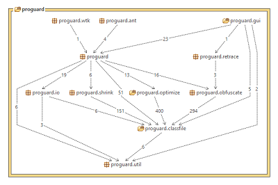
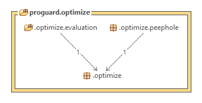

Introduzione
Nella versione 4.0 del sistema software è stata introdotta la preveridica del codice e altre ottimizzazioni.
Lo step finale di preverifica aggiunge informazioni richieste dalla J2ME e migliorando il tempo di inizializzazione
del sistema per Java 6.
- Ottimizzazione bytecode;
- Lettura e scrittura di jars innnestati;
- Gestione dei file compilati con la JDK 1.5;
Architettura SW
Il modello architetturale del software in versione 3.0.7 è ha subito due variazioni rilevanti:
- Introduzione al livello Function del compoenente di ottimizzazione: proguard.optimize
- Reingegnerizzazione del livello Front-End: il componente proguard.ant è stato spostato nelle External Components.
La Fig. 3.1 mostra l'architettura di ProGuard.

Ottimizzazione bytecode
Il componente di ottimizzazione riceve in ingeresso lo Shrink Code e genera in output il bytecode ottimizzato per la fase
di offuscamento

Le ottimizazioni sul bytecode sono eseguite a livello di metodi:
- Valutazione delle espressioni costatni;
- Rimozioni di computazioni non necessarie;
- Rimozioni di accessi a campi non necessari;
- Rimozioni di chiamate a metodi non necessarie;
- Rimozioni di salti condizionati non necessari;
- Rimozioni di confronti non necessari;
- Ottimizzazioni peephole: ottimizzazioni eseguite in un piccolo insieme di istruzioni in un segmento di codice
generato. Viene effettuato il riconoscimento di serie di istruzioni che possono essere sostituite da un insieme di istruzioni
più brevi o più veloci;
- Impostare il modificatore di accesso "final" per classi e metodi, quando possibile;
- Rimozione di codice per il logging
Gli effetti positivi delle ottimizzazioni dipendono dal codice e dalla VM sulla quale il codice è eseuito.
Reingegnerizzazione del Front-End
Al fine di eliminare le dipendenze con le classi del Business Model, il componente proguard.ant è stato spostato
nelle External Components, interfacciandosi esclusivamente con il Front-End.
Le figure segueni mostrano reingegnerizzazione effettuata.